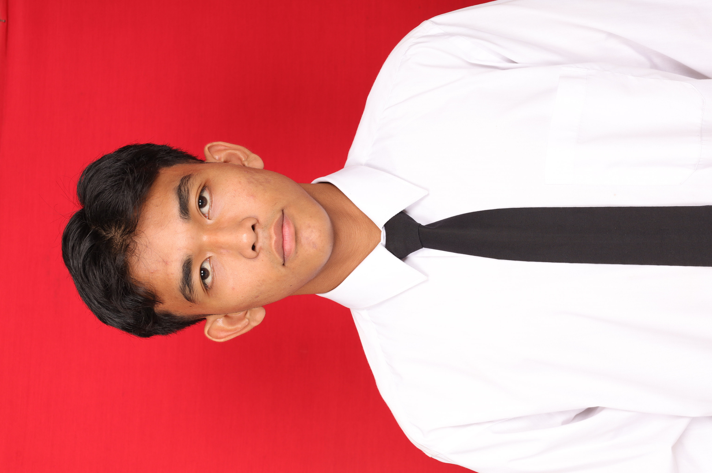
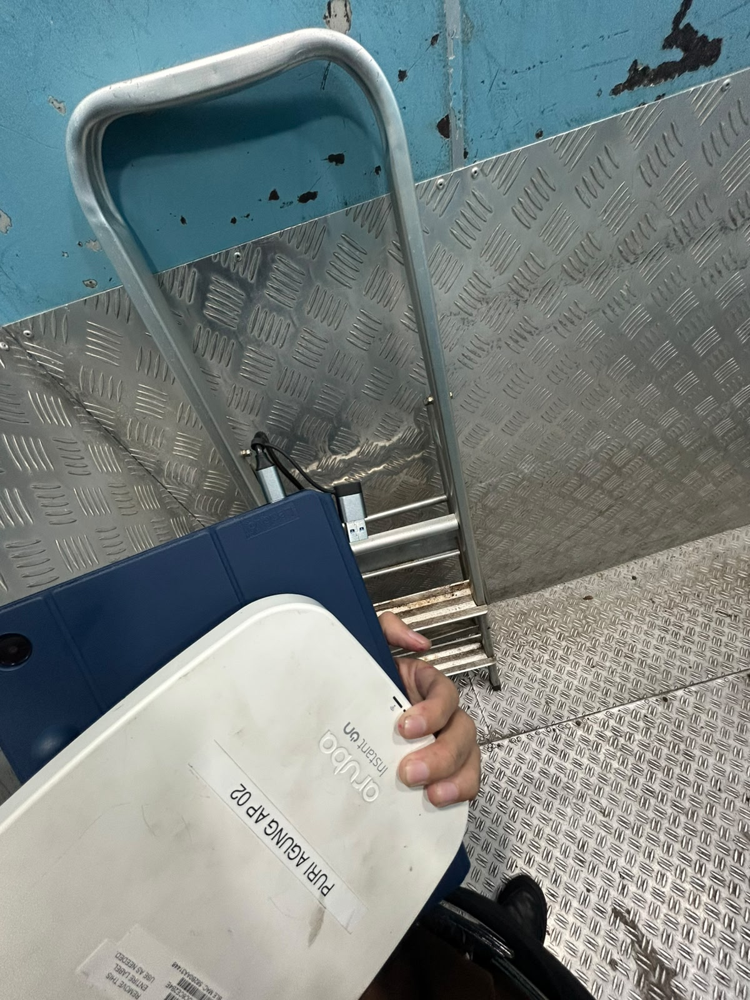
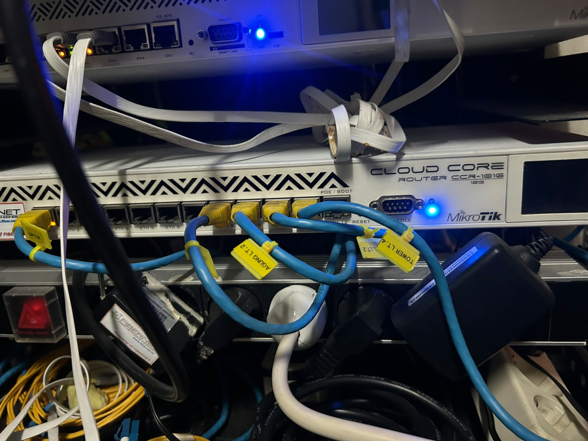
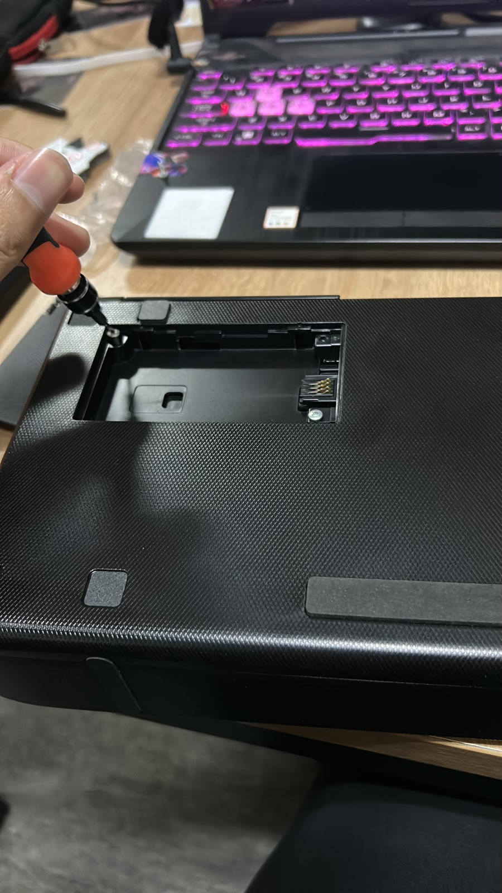

Saya adalah seorang mahasiswa aktif Semester I Program Studi Informatika yang memiliki ketertarikan tinggi terhadap berbagai aspek teknologi informasi. Memiliki motivasi belajar yang kuat, disiplin, serta komitmen dalam mengembangkan kemampuan akademik dan keterampilan dasar di bidang informatika. Mampu bekerja secara mandiri maupun dalam tim, serta bertanggung jawab dalam menjalankan tugas yang diberikan.
Saya memiliki kemampuan dalam troubleshooting komputer, konfigurasi jaringan, instalasi sistem operasi, dan pengembangan website sederhana. Saya dikenal sebagai pribadi yang disiplin, bertanggung jawab, serta mudah beradaptasi terhadap lingkungan dan teknologi baru. Kemampuan tersebut terus saya kembangkan melalui proses pembelajaran, praktik, dan pengalaman yang saya peroleh selama perkuliahan.
| Data | Keterangan |
|---|---|
| Nama | Ahmad Vije Ahsan |
| Alamat | Jakarta, Indonesia |
| vijeahsan4@gmail.com | |
| Status | Mahasiswa | Pekerja Lepas |
| Tahun | Institusi |
|---|---|
| 2022 - 2025 | SMKN 1 Jayapura, Perhotelan |
| 2025 - Sekarang | UNIVERSITAS SIBER ASIA, Informatika |


